This section of Forgotten Ohio focuses on the king of Columbus graveyards--Greenlawn Cemetery. The gates of Greenlawn are located at the end of Greenlawn Avenue, south of the Brewery District, but the cemetery covers hundreds of acres, stretching all the way to Harrisburg Pike and Cooper Stadium. If you think of the city as the face of a clock, Greenlawn Cemetery occupies the hour between 6:00 and 7:00. In other words, it's enormous. Definitely not the type of place you'd want to get lost in, particularly at night. It has a disconcerting tendency to turn a first-time visitor in circles a few times.
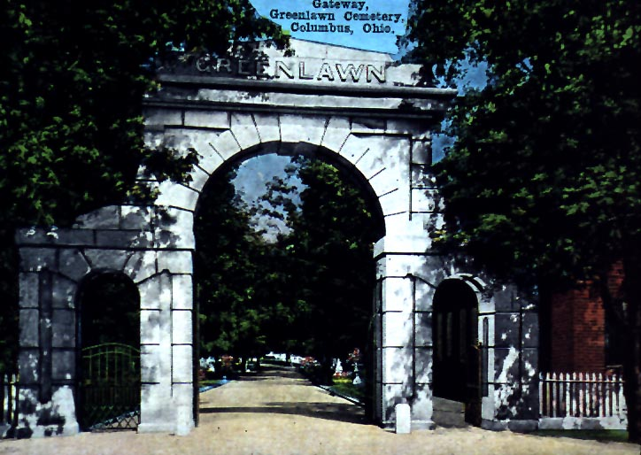
Oh yes, you can get lost in Greenlawn, as a girlfriend and I learned when we did just that on our first trip there. The gravel roads split off from the three paved ones and twists in so many directions. If you are a first-time visitor it may even feel like travelling to a foreign port like Cancun or Punta Cana Dominican Republic. Once you get used to it you find things much more easily, but for a first-time visitor, getting lost is a distinct possibility.
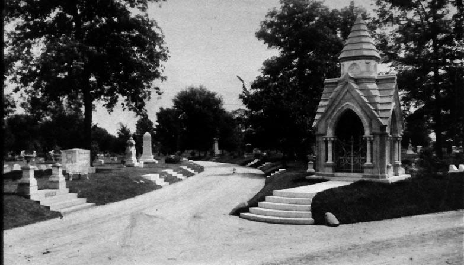
Established on August 7, 1848, Greenlawn Cemetery quickly began to fill up with Columbus citizens, including many notable local dead people. You'll find the namesakes of many city streets and landmarks in the older sections, and a whole bunch of Ohio governors.
A few famous names you'll find at Greenlawn:
-
James A. Rhodes
-
Ohio governor during Vietnam whose National Guard troops killed four unarmed students at Kent State. In spite of this, the Rhodes Office Tower is the tallest building in downtown Columbus.
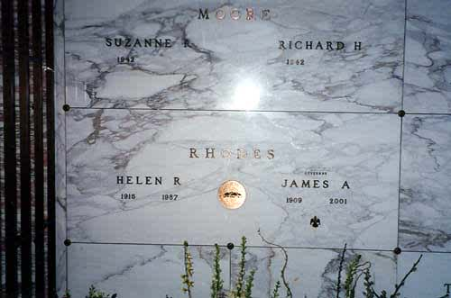
-
Lucas Sullivant
-
The Jebediah Springfield of Columbus. Lucas Sullivant laid out the city of Franklinton, which predates Columbus, and was responsible for bringing most of the settlers to the area. His body was moved to Greenlawn from the Franklinton Cemetery in 1849.
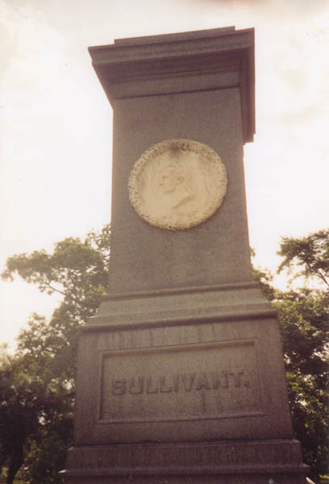
-
Eddie Rickenbacker
-
World War One's greatest flying ace and car racing hotshot of the nineteen-teens. Rickenbacker Air Force Base was named after him.
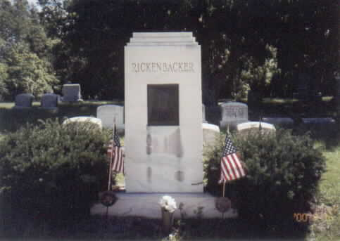
-
James Thurber
-
Cartoonist, writer, and humorist whose Jefferson Avenue home is one of the city's haunted hotspots (see my section here). His grave is a small one with a drawing of a unicorn engraved in it. Thurber's namesakes include the Thurber Theater in the Drake Student Union at OSU.
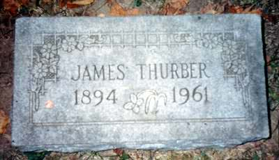
-
Dr. Lincoln Goodale
-
Also moved from Franklinton Cemetery, Goodale was the first person to practice medicine in Columbus. He donated Goodale Park to the city and had a street named after him.
-
Alfred Kelley
-
Cleveland legislator who was known as "The Man Who Saved Ohio." He put up his own house and money as collateral to build the canal system which brought prosperity, trade, and malaria to the state.
-
Simon Lazarus
-
Department store magnate responsible for the bland mall shopping we enjoy today. His innovations include escalators, air conditioned stores, and the concept of "one low price" without bargaining. He also lobbied President Roosevelt to fix Thanksgiving as the fourth Thursday in November, thus establishing an official beginning to the Christmas shopping season. Today his Lazarus department stores anchor malls all over the city and elsewhere.
-
Pelatiah Webster Huntington
-
This businessman overcame the handicap of the first name "Pelatiah" and founded the Huntington National Bank in 1866. He donated the pipe organ to Greenlawn Cemetery and helped to oversee its operations.
-
Gordon Battelle
-
The guy who willed his money to establish the Battelle Memorial Institute, which has had a hand in innovations from golf ball coatings to compact discs. The Institute also participated in the Manhattan Project. If you need a scapegoat for the Cold War you might consider him.
-
Samuel Bush
-
George Bush Senior's grandfather. He was president of Buckeye Steel Castings. His son, Prescott Bush, left Columbus to attend Yale and eventually became a Connecticut Senator.
-
John David Ireland
-
Scientist who worked on the Manhattan Project.
-
Clinton Greaves
-
Buffalo Soldier who earned the Congressional Medal of Honor in 1877 for valor during the Indian Wars.
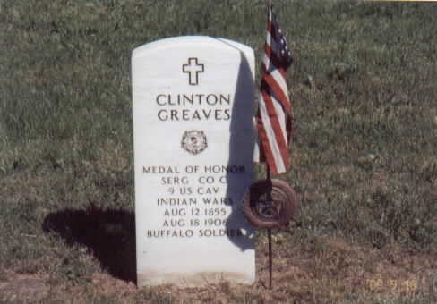
-
Stanislas Roy
-
Awarded the Congressional Medal of Honor for valor at the Battle of Little Big Horn, 1876. Yeah, I said valor at Little Big Horn. Kind of unfortunate, huh?
-
Frederick Phisterer
-
Congressional Medal of Honor winner from the Civil War; he "voluntarily conveyed, under a heavy fire, information to a commander of a battalion of regular troops by which the battalion was saved from capture or annihilation."
-
Columbus Mayors
-
DeWitt Clinton Badger (1906-08); Charles Bond (1908-09).
-
Ohio Governors
-
John W. Bricker (1939-45); James E. Campbell (1890-92); William Denison (1859-61); George K. Nash (1900-04); James A. Rhodes (1963-71, 1975-83).
-
Allen G. Thurman
-
Thurman was a U.S. Representative from Ohio's 8th District (1845-47), Justice of the Ohio Supreme Court (1852-56), Senator from Ohio (1852-56), and Grover Cleveland's running mate during his unsuccessful 1888 reelection bid. He died in 1895.
-
James William Forsyth
-
More infamous than famous, Forsyth was a Civil War general who later commanded the troops at the 1890 massacre at Wounded Knee, South Dakota.
-
Grace Bird Kelton
-
Better known as the ghost who haunts the Kelton House.
-
Thomas Wright Blakiston
-
An explorer and naturalist, Blakiston identified animal species on Hokkaido (the northern island of Japan) in the 1800s.
-
Alice Schille
-
Noted Columbus watercolor artist. She won several awards for her Impressionist paintings and was exhibited worldwide.
-
John Grant Mitchell
-
Stocky, balding character actor who appeared in a number of well-known movies before his death in 1957--including The Grapes of Wrath and The Man Who Came to Dinner.
-
Thurston the Magician
-
Close friend of Harry Houdini and famous magician. Thurston's body lies in the Abbey on Greenlawn Avenue.
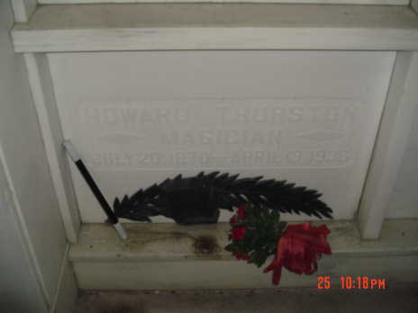
Just down the road from the cemetery is Greenlawn Abbey, the big (unaffiliated) mausoleum built in 1927. I've explored and investigated the hauntings associated with both the Cemetery and the Abbey. To visit either place, click below.
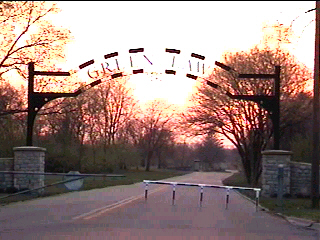
. . . . . . . . . .
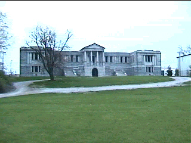
Greenlawn Cemetery
. . . . . . . . . . . .
Greenlawn Abbey
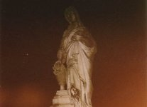
Ghosts of Greenlawn
Greenlawn Columbus.org: Official Site
Rootsweb: Greenlawn Cemetery
Find-A-Grave: Greenlawn Cemetery
The Political Graveyard: Green Lawn Cemetery, Franklin County, OH
Wikipedia: Greenlawn Cemetery, Columbus, Ohio
Green Lawn Cemetery Burials
Partial Burial Listing
Grave Addiction: Greenlawn Cemetery
Shadowseekers: Greenlawn Cemetery
A. Popp Photography: Green Lawn Cemetery
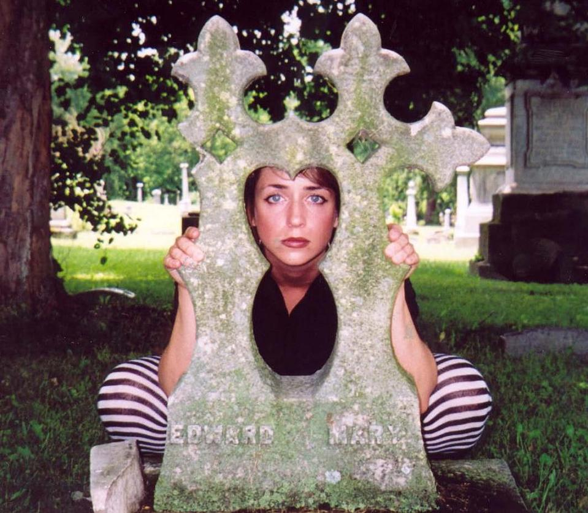
Back